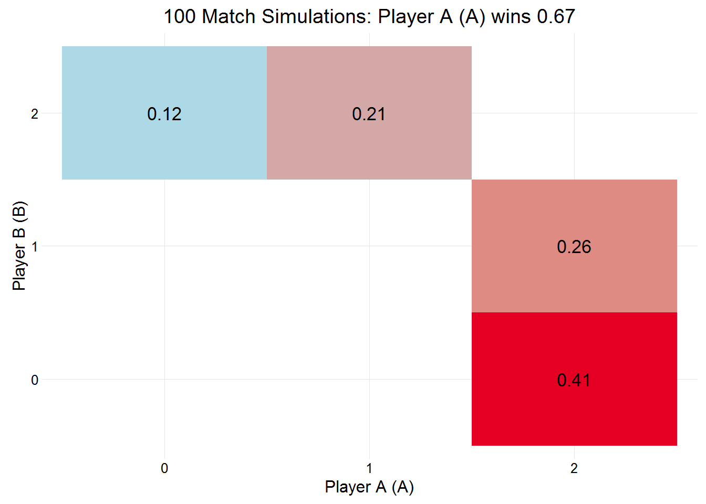

Simulate many matches between two players, given a number of parameters, that include probability of each player winning a point on their first serve, on their second serve, and the probability that their first serve will go in. This function returns a detailed list with data about the sets and games within each simulated match.
simMatches(n = 1000, pA, pB, sets = c(3, 5), tiebreaks = TRUE,
finalSetTiebreak = FALSE, players = c("A", "B"),
p2A = NULL, firstServeA = NULL,
p2B = NULL, firstServeB = NULL,
.progress = "none")| param | details |
|---|---|
| n | number of simulations (default is 1000) |
| pA | probability of player A winning point on their first serve |
| pB | probability of player B winning point on their first serve |
| sets | number of sets (3 or 5) |
| tiebreaks | play tiebreaks in the event the set reaches 6 games all (default = TRUE) |
| finalSetTiebreak | play a final set tiebreak if sets and games are tied, otherwise keep playing |
| players | player names (vector of length 2) |
| p2A | probability of player A winning point on their second serve |
| firstServeA | probability of player A’s first serve being in |
| p2A | probability of player B winning point on their second serve |
| firstServeB | probability of player B’s first serve being in |
| .progress | plyr’s progress bar |
Unlike using replicate on simMatch, using simMatches will return a detailed list, containing data about the simulated matches rather than just the results of those simulations.
There are a number of generic methods available for an object returned by simMatches, these are print, summary and plot, example use is show below.
egMatches <- simMatches(n = 100, sets = 3,
pA = .78, pB = .70,
p2A = .56, firstServeA = .67,
p2B = .6, firstServeB = .7)The object egMatches has a class of svR_matches which comes with a few methods
egMatches##
## Simulation of 100 matches:
##
## Player A (A) won 0.69 of matches.
##
## Server Probabilities:
## player p p2 firstServe
## A 0.78 0.56 0.67
## B 0.70 0.60 0.70summary(egMatches)##
## Simulation of 100 matches:
##
## Player A (A) won 0.69 of matches.
##
## Server Probabilities:
## player p p2 firstServe
## A 0.78 0.56 0.67
## B 0.70 0.60 0.70
##
##
## playerB
## playerA 0 1 2
## 0 0.14
## 1 0.17
## 2 0.33 0.36plot(egMatches)
simMatchesThe returned list can also be entered into the function simDf which will convert the simulated matches into a dataset, containing data about each of the simulations, including data going all the way down to the individual games. egMatches, created above, contains 100 simulations, which produces a dataset of dimensions , each simulation will produce a different sized dataset, a large number of simulations will obviously produce a much larger dataset, and will take longer for simDf to create the dataset.
df <- simDf(egMatches)
head(df)## simNo playerA playerB mA mB result setNo pA pB setA setB set_res gameNo
## 1 1 A B 2 0 1 1 A B 6 3 1 1
## 2 1 A B 2 0 1 1 A B 6 3 1 2
## 3 1 A B 2 0 1 1 A B 6 3 1 3
## 4 1 A B 2 0 1 1 A B 6 3 1 4
## 5 1 A B 2 0 1 1 A B 6 3 1 5
## 6 1 A B 2 0 1 1 A B 6 3 1 6
## serving p p2 firstServe game_res server returner
## 1 A 0.78 0.56 0.67 1 4 1
## 2 B 0.70 0.60 0.70 1 4 0
## 3 A 0.78 0.56 0.67 1 4 0
## 4 B 0.70 0.60 0.70 1 4 1
## 5 A 0.78 0.56 0.67 1 4 1
## 6 B 0.70 0.60 0.70 1 4 1The dataset contains the following variables:
| variables | about |
|---|---|
| simNo | simulation number |
| playerA | player A (who started the match serving) |
| playerB | player B (who started the match returning) |
| mA | sets won by player A |
| mB | sets won by player B |
| result | match result, (1 if player A wins, 0 otherwise) |
| setNo | set number |
| pA | player A (who started the set serving) |
| pB | player B (who started the set returning) |
| setA | games won by player A |
| setB | games won by player B |
| set_res | set result (1 if player A wins, 0 if player B wins) |
| gameNo | game number in set |
| serving | player serving |
| p | probability of server winning a point on their first serve |
| p2 | probability of server winning a point on their second serve |
| firstServe | probability of first serve being in |
| game_res | game result (1 if server wins, 0 if returner wins) |
| server | number of points won by server in service game |
| returner | number of points won by returner in service game |